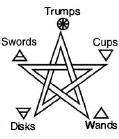

CHAPTER TWELVE
INTRODUCTION TO THE CARDS
I know enough about the works of Aleister Crowley to know that it would be unwise for me to presume to interpret him. There is more than enough Crowley material available to allow Crowley to explain Crowley. Finding that material when you need it, however, can be a problem.1
Now that we are familiar with many of the little bits of things you should know before beginning your study of Aleister Crowley's Thoth Tarot, I think we are about ready to examine the cards themselves without the distraction of having to digress repeatedly into fundamental discussions of Qabalah, Thelema, alchemy, or Enochiana. Knowing the place whereon I standest is holy ground, it is with no small measure of trepidation that I begin my comments on the individual cards. I have tried to the best of my ability to put off the sandals of presumption and keep my personal speculations and theories to an absolute minimum.
If I should state, for instance, that the goddess of the Adjustment card is the Fool's girlfriend, or that the Devil is God as misunderstood by the wicked, or that the Magus is cursed so that all his words are distorted and misunderstood, it will be because, somewhere in his voluminous writings, Crowley has said so. I make no apologies for quoting Crowley liberally, and quoting him often, from a number of texts including The Book of Thoth, The Heart of the Master,2 Magick, Book IV, The Equinox, Konx Om Pax, Orpheus, and letters between Crowley and Harris. I have taken great pains to identify and reference all such quotes. That being said, I must remind the reader that not every aspect of the Thoth Tarot is new or revolutionary. Spending too much time and energy searching for secret Crowleyisms hidden in every curious brushstroke or printing flaw is more often a symptom of mental instability than spiritual revelation.
The fact is that the format and fundamental images of most of the individual cards of the Thoth Tarot are not the invention of Aleister Crowley. As a member of the Golden Dawn, Crowley was encouraged to paint his own personal deck using specific images and colors outlined in Order documents. Lady Harris possessed the written descriptions and was also familiar with the published deck painted by Pamela Coleman Smith under the direction of Arthur Edward Waite. In discussing each card, I will describe the original Golden Dawn design and, as much as possible, point out similarities and differences.
THE MAJOR AND MINOR ARCANAS
When we break the seal and open a new deck of tarot cards we usually discover that they are neatly organized and ordered. The first twenty-two cards are numbered with roman numerals 0–XXI and are called the Major (or Greater) Arcana. The remaining fifty-six cards are called the Minor (or Lesser) Arcana and are divided into four suits. The suits are usually ordered Wands, Cups, Swords, and Disks. Each suit contains fourteen cards consisting of four court cards (Knight, Queen, Prince, and Princess)3 and ten small cards (ace through 10).
That is how most decks of tarot cards are arranged when they first come from the manufacturer. However, the true hierarchy of the tarot would have them arranged as I show below. (The logic behind these divisions will soon become clear.)
From a Qabalistic point of view, the relationship between the two Arcanas is complex, if not downright inscrutable. I could digress at this point into hundreds of pages of debate over which Qabalistic world plays host to which Arcana,4 but I intend to spare us that detour. Crowley said, “the Tarot will lose all its vitality for one who allows himself to be side-tracked by its pedantry.”5 I couldn't agree more, so let's try to make it easy on ourselves.
A simple (if not altogether accurate) way of looking at the two Arcanas is by projecting them upon the pentagram.
In figure 22, the Major Arcana (the twenty-two trumps or atus) represents spirit and is placed on the top point of the pentagram. Each trump is, in essence, a divine personage “possessing its own private, personal and particular Universe.”6 Each presents an aspect—a facet of supreme reality. Like the element spirit, the influence of the trumps pervades all levels of consciousness and creation—attracting, repelling, connecting, and separating the infinite elemental combinations.

FIGURE 22. THE PENTAGRAM OF THE MAJOR AND MINOR ARCANAS. THE MAJOR ARCANA RULES THE MINOR ARCANA IN THE SAME WAY THAT SPIRIT RULES THE FOUR ELEMENTS.
The Minor Arcana represents the four elemental arms of the pentagram that spirit (the Major Arcana) simultaneously unites and separates. The cards of the Minor Arcana are not divine personages, but “primarily sub-Elements, parts of the ‘Blind Forces' under the Demiourgos, Tetragrammaton.”7
I know this is a lot to absorb, especially for those of you who are not particularly interested in the details of Qabalistic thought. Perhaps all this will be easier to understand if we look at it this way:
We could argue quite correctly that there are really 1,232 (22 × 56) tarot cards in a complete deck; fifty-six cards of the Minor Arcana dutifully playing out their elemental roles in twenty-two different, but intimately connected, drama/comedies written and directed by each of the twenty-two trumps. In The Book of Thoth, Crowley uses the Three of Disks, Work, as an example of how this plays out:
The Three of Disks belonging to the High Priestess or the Lovers might represent the establishment of an oracle like that of Delphi. The Hierophant's Three of Disks might point to the construction of a cathedral. The Tower's Three of Disks perhaps indicating the massing of a standing army. The ideas that such pairings evoke can be an infinite source of meditation, and an invaluable exercise for anyone wishing to use the cards for divination.8
In the pages that follow, I briefly discuss each of the seventy-eight cards of the Thoth Tarot. I will focus primarily upon the magical and spiritual traditions that gave birth to it as a tarot entity, and upon demonstrating how the various astrological and Qabalistic components blend to create each card's unique character. (For divinatory meanings and Crowley's method of divination, see chapter 20.) Wherever possible, I also include excerpts of letters between Harris and Crowley concerning the card. I find these particularly interesting.
Now on to the seventy-eight cards of the Thoth Tarot. We will start with the Major Arcana.